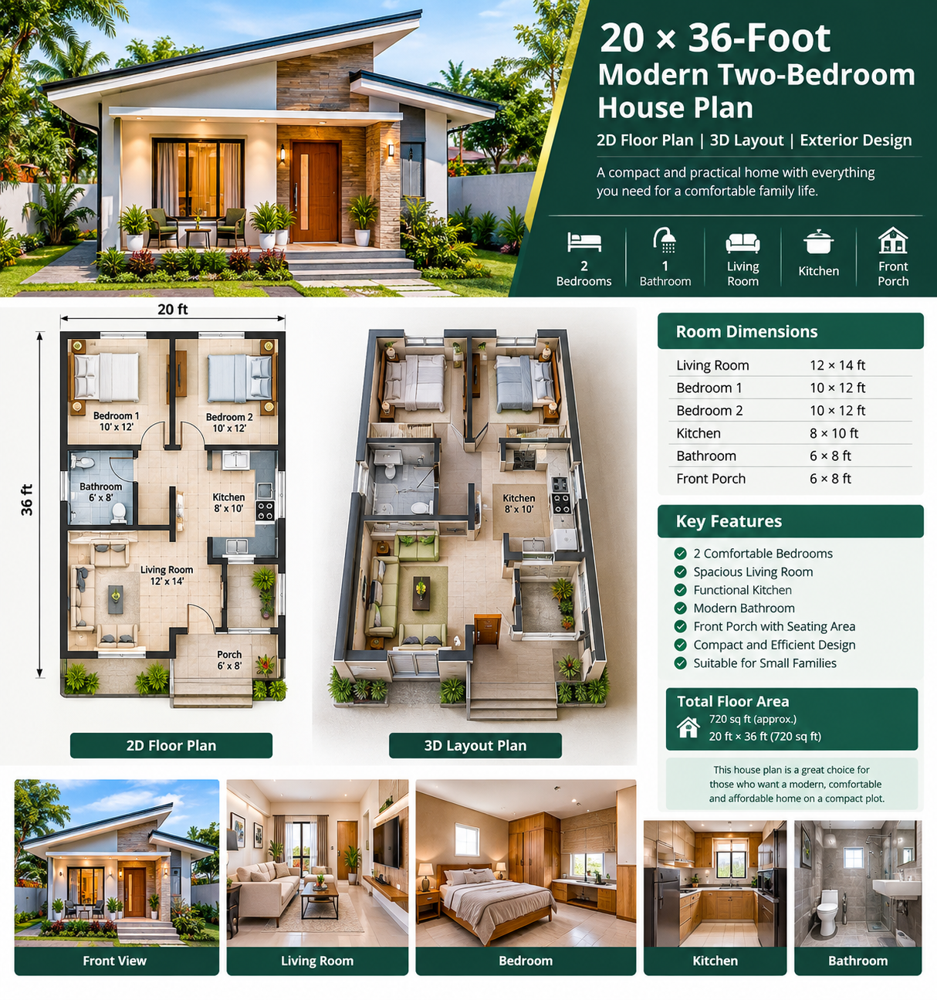
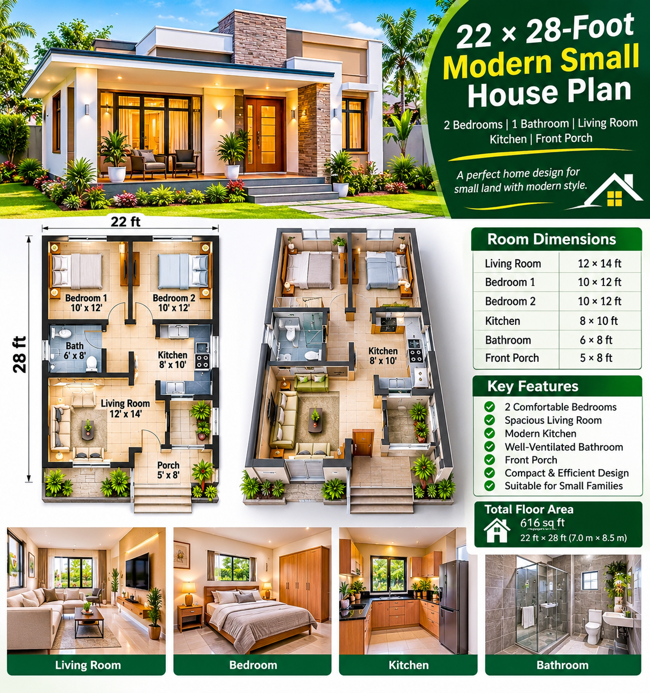
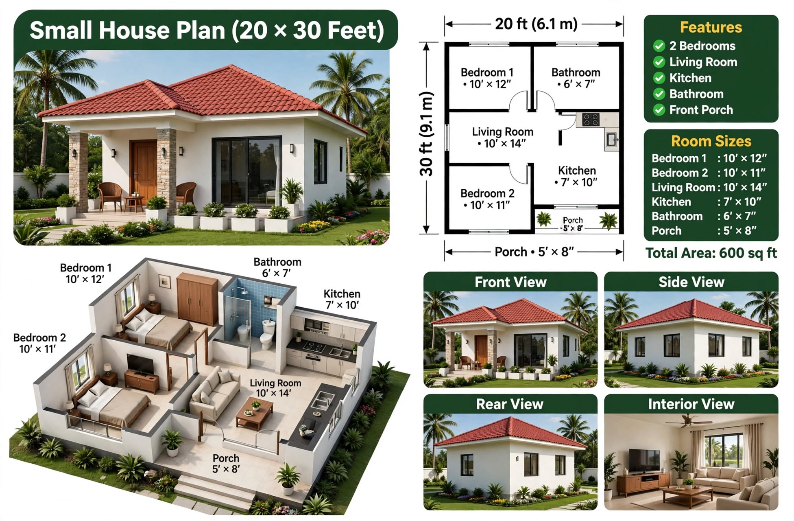

Small Houses
Practical small-home concepts, floor-planning guidance and complete design articles.

ARTICLE 01 · FEATURED PLAN
20 × 36-Foot Modern Two-Bedroom Small House Plan
Explore the proposed room dimensions, 2D planning notes, furnished 3D layout guidance, exterior ideas, construction stages and budget checklist for a compact family home.
READ THE COMPLETE GUIDE →
ARTICLE 02 · NEW PLAN
22 × 28-Foot Modern Two-Bedroom Small House Plan
Explore a compact two-bedroom home concept with a modern exterior, preliminary room planning, furniture layout ideas, construction stages and a practical materials checklist.
READ THE COMPLETE GUIDE →
ARTICLE 03 · NEW PLAN
24 × 28-Foot Modern Three-Bedroom Small House Plan
Explore a compact three-bedroom family home concept with a separate kitchen, modern exterior, 2D floor-plan guidance, furnished 3D layout and construction planning notes.
READ THE COMPLETE GUIDE →
ARTICLE 04 · PLAN REVIEW
24 × 32-Foot Two-Bedroom Small House Plan with Front Porch
Review the room-size labels, open living and dining area, separate kitchen, front porch, pitched-roof exterior and the important dimensional checks before construction.
READ THE COMPLETE GUIDE →
ARTICLE 05 · PLAN REVIEW
20 × 30-Foot Two-Bedroom Small House Plan with Front Porch
Explore the room schedule, compact kitchen, bathroom, porch, tiled roof, exterior style and the important dimension checks before construction.
READ THE COMPLETE GUIDE →
ARTICLE 06 · PLAN REVIEW
60 m² Small Budget White House Plan for Sri Lanka
Two bedrooms, a flat concrete roof, a sheltered porch and practical tropical-climate planning.
READ THE COMPLETE GUIDE →
ARTICLE 07 · PLAN REVIEW
Small White Village Cottage with a Veranda
A traditional one-bedroom cottage concept with a clay-tile roof and a generous garden-facing veranda.
READ THE COMPLETE GUIDE →
ARTICLE 08 · PLAN REVIEW
8.5 m × 7 m Two-Bedroom Small Family House
A compact family layout with two bedrooms, a separate kitchen, front porch and tiled roof.
READ THE COMPLETE GUIDE →
ARTICLE 09 · PLAN REVIEW
Modern Small White House with Carport
A minimalist flat-roof concept with two bedrooms, open living/dining and an attached carport.
READ THE COMPLETE GUIDE →
ARTICLE 10 · PLAN REVIEW
Small White One-Bedroom House with a Tiled Roof
A simple cottage-style home concept with a front porch, living space and pitched roof.
READ THE COMPLETE GUIDE →
ARTICLE 11 · PLAN REVIEW
Very Small One-Bedroom White House — Dimension Review
A compact one-bedroom concept with a corrected explanation of its unverified outer dimensions.
READ THE COMPLETE GUIDE →
ARTICLE 12 · PLAN REVIEW
78 m² Modern Small House with a Flat Roof
A minimalist one-bedroom concept with open living/dining, kitchen and shaded porch.
READ THE COMPLETE GUIDE →